O objetivo deste tutorial é experimentar outras ferramentas de modelação para criar um conjunto de objetos que irão servir de cenário para uma animação com a nave (tutorial nº3).
1- Comece por criar uma cena limpa de objetos (no início, o Blender começa sempre com um cubo já inserido). Clique na tecla “Delete” ou X para apagar o cubo.
2- Coloque-se em visão de topo (NUMPAD 7) e visão ortogonal (NUMPAD 5). Adicione um plano e aumente a escala do plano 5 vezes (prima S, depois 5). Em Edit Mode, prima 6 vezes o botão Subdivide.
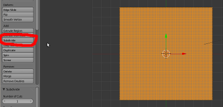3- Seleccione um vértice central ou próximo do centro. Active o Proportional Editing Mode. Escolha a opção Random.
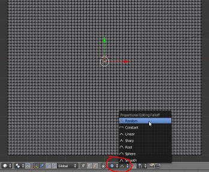4- Se mover o vértice (G) para cima irá obter um efeito semelhante à imagem abaixo. Pode modificar a área afectada pelo movimento através da roda do rato. O círculo cinza que vê abaixo define a área afectada e pode ser aumentado/reduzido rodando a rota do rato.
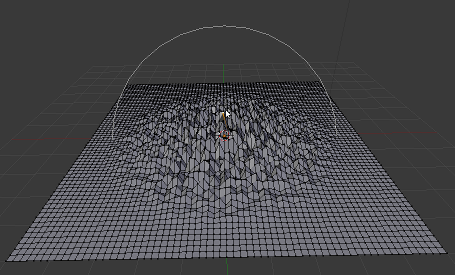5- Seleccionando um vértice de cada vez (ou vários, com o SHIFT), construa uma espécie de desfiladeiro como na imagem abaixo.
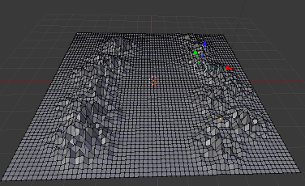6- Em Object Mode, com o plano seleccionado, vá ao painel de Modifiers (ícone semelhante a uma chave inglesa) e active o modifier Subdivision Surface.
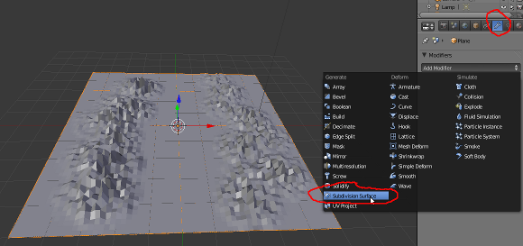7- No painel de ferramentas da janela 3D View (T), pressione o botão Smooth para obter algo similar à imagem abaixo. Finalmente, com o objeto seleccionado, prima M para enviar o objeto criado para a última layer (veja o cursor do rato na imagem).
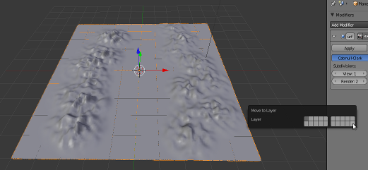8- Em Object Mode, coloque-se em visão de topo (NUMPAD 7) e visão ortogonal (NUMPAD 5). Adicione um cubo e diminua a sua dimensão para 1/5 (prima S, depois 0.2).
Posicione o 3D Cursor afastado do cubo. Siga a orientação da imagem. Mude o Pivot para 3D Cursor.
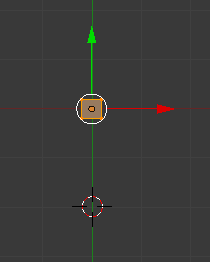 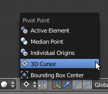9- Em Edit Mode, com o todo o cubo seleccionado, clique no botão Spin (painel de ferramentas). Introduza 360 graus para fazer um círculo e um número de steps que permita construir uma forma semelhante à da imagem abaixo. Como escolhemos o 3D Cursor como Pivot, o Spin irá ser feito em torno desse cursor.
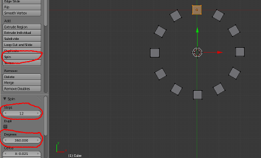10- Em Object Mode, duplique o objeto criado (SHIFT+D) e active a ferramenta para redimensionar (S). Aumente ligeiramente de forma a obter um segundo círculo de “caixas”.
11- Coloque o Pivot novamente no Median Point.
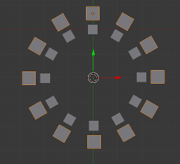12- Seleccione o círculo exterior de “caixas”, vá ao painel de Modifiers e aplique um modifier Array.
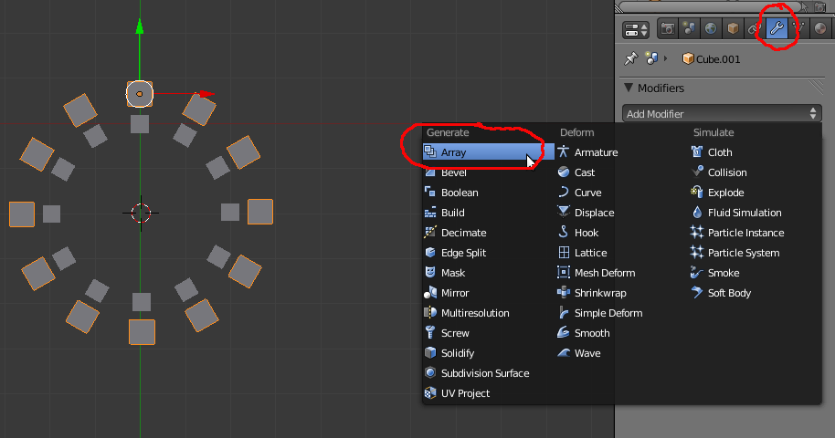13- Aumente o Count para 10 e introduza os valores necessários no eixo Z para obter um efeito similar ao da imagem. Repita o processo para o círculo interior.
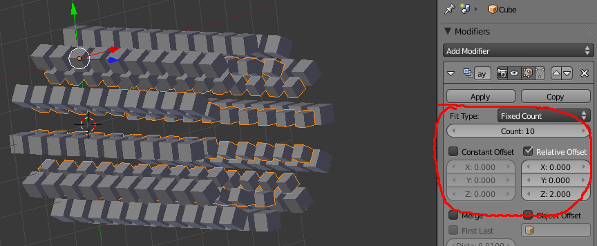14- Mova estes 2 objetos para outra layer à sua escolha.
15- Em Object Mode, coloque-se em visão de topo (NUMPAD 7) e visão ortogonal (NUMPAD 5). Adicione um círculo.
16- Em Edit Mode, apague vértices (no exemplo ficámos só com 11) e mova 3 vértices (G) para a esquerda de forma a criar um recorte semelhante ao da imagem à direita.
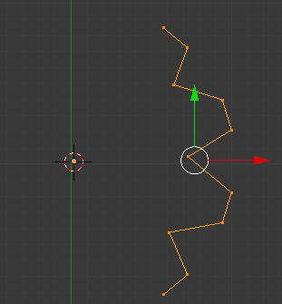17- Em Edit Mode, com todos os vértices seleccionados, clique no botão Screw para criar um objeto semelhante ao apresentado abaixo. Veja as configurações utilizadas no painel de ferramentas (lado esquerdo).
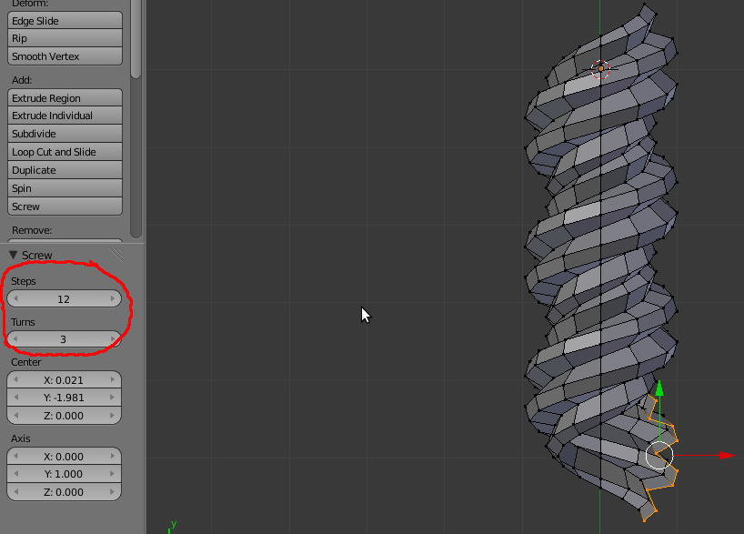18- Aplique um modifier Subdivisin Surface e Smooth como fez nos passos 6 e 7.
19- Mova este objeto para outra layer à sua escolha.
20- Em Object Mode, coloque-se em visão de topo (NUMPAD 7) e visão ortogonal (NUMPAD 5). Adicione um cubo. En Edit Mode, clique 2 vezes em Subdivide.
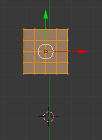Posicione o 3D Cursor afastado do cubo. Siga a orientação da imagem. Mude o Pivot para 3D Cursor.
21- Em Edit Mode, com todos os vértices seleccionados, vá ao menu Mesh e escolha a ferramenta Warp (Transform > Warp). Na barra de ferramentas (à esquerda), deverá ser visível o painel com as propriedades da ferramneta Warp. Utilize um Warp Angle de 90º (ou próximo desse valor se quiser criar uma forma similar à apresentada em baixo).
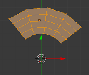22- Em Object Mode, clique no botão Origin do painel de ferramentas e escolha a terceira opção para o centro ou origem do objeto criado (ponto laranja) passar para a localização do 3D Cursor. Na imagem abaixo, o centro ou origem do objeto, o ponto laranja, já está na localização do 3D Cursor.
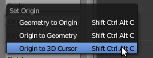 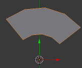23- Em Object Mode, adicione o modifier Mirror e configure de forma semelhante à imagem apresentada.
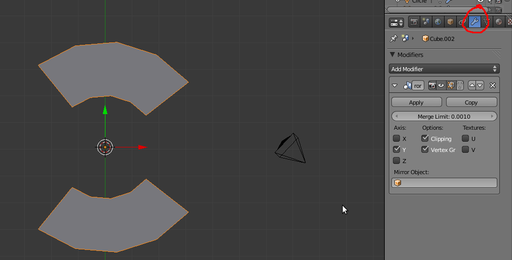Vamos espelhar o objecto no eixo Y e activar a opção Clipping para evitar que os vértices possam ultrapassar o espelhamento.
24- Em Edit Mode, visão Wireframe (Z), selecção de vértices, seleccione com caixa (B) os vértices necessários e mova-os (G) de modo a criar uma forma similar à da imagem abaixo.
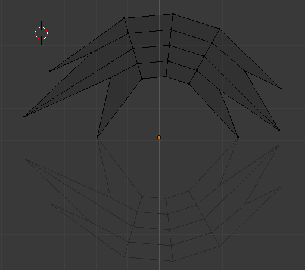 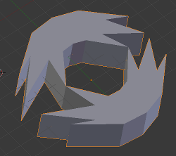25- Em Object Mode, com o objeto seleccionado, vá ao painel Object (ícone é um cubo) e atribua um nome fácil de recordar ao objeto. Faça o mesmo para os objetos que criou anteriormente. No exemplo, utilizámos os seguintes nomes: espigados, espiral, circulo_fora, circulo_dentro, desfiladeiro.
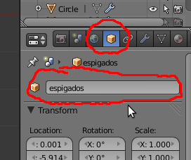Faça o mesmo para o avião/nave do tutorial anterior.